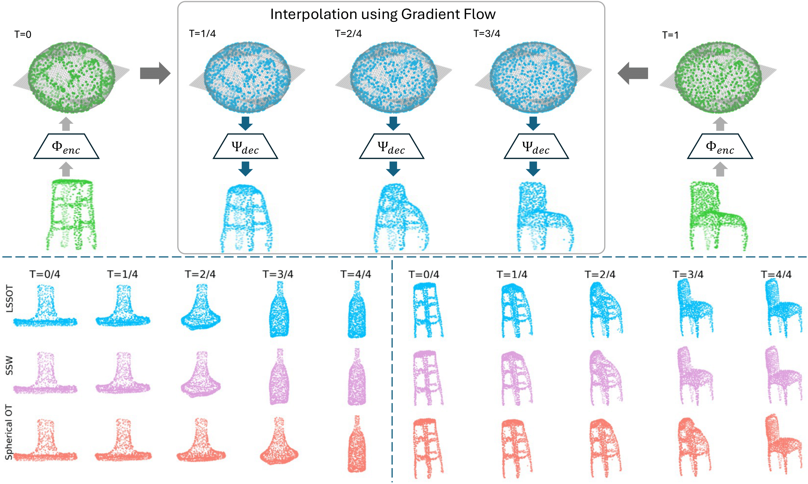

Experiments
Cortical Surface Registration
We verify the validity and efficiency of the proposed LSSOT method in comparing spherical cerebral cortex data for registration tasks. Cortical surface registration seeks to establish meaningful anatomical correspondences across subjects or time points.
We leverage the Superfast Spherical Surface Registration (S3Reg) [1] neural network to perform atlas-based registration, which focuses on registering all surfaces to one atlas surface. We replace the original mean squared error (MSE) similarity loss with our LSSOT distance and other baselines, and evaluate the registration performance achieved by each similarity measure. Baselines include Spherical Sliced-Wasserstein (SSW) [2] and Stereographic Spherical Sliced Wasserstein Distances (S3W) [3] and the Sliced Wasserstein distance (SWD) [4] under Euclidean geometry.

Figure: qualitative registration results (middle columns) from a moving surface (left column) to the fixed surface (right column).

Table: evaluation metrics on the test datasets (mean $\pm$ standard deviation) for sulcal depth registration of NKI dataset (left hemispheres). The best two methods are bolded. The average training time for each epoch is also included in the bottom row of each scenario. We perform significance testing for the difference on Dice, Edge Dist. and Area Dist. against LSSOT. $^{**}$ denotes $p<0.001$ and $^{*}$ denotes $p<0.01$.
Point Cloud Interpolation
LSSOT can also be utilized in point cloud analysis, once each point cloud is endowed with a spherical representation. In this experiment, we explore the interpolations between point cloud pairs from the ModelNet dataset. Specifically, we train an autoencoder to project the original point clouds to a spherical latent space, to represent each of them as a spherical distribution. Then we apply gradient flow between the pairs of spherical distributions using the LSSOT metric along with SSW and Spherical OT. Finally, this transformation is reconstructed in the original space by the trained decoder, resulting in an interpolation between the original pairs.
Figure: Top panel: the interpolation process between a pair of point clouds using gradient flow in the latent space $\mathbb{S}^2$. Bottom panel: gradient flow interpolations from a range hood to a bottle (left), and from a stool to a chair (right) using three metrics LSSOT, SSW and spherical OT.